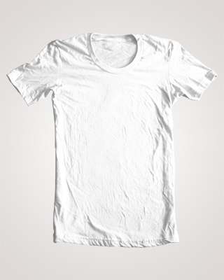
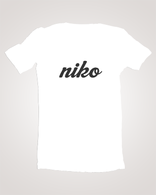

productColorizer is a light-weight solution for users to quickly preview a product in different colors. The plugin uses only two images per product to create the effect and it is built on top of the robust and popular Javascript framework jQuery, providing you with an easy setup. The plugin works in all major browsers including IE7+ (will work with IE6 if you use a png fix). View the source on GitHub.
Download, unzip, and upload the files to your server. Link all necessary files in the head of your document and make sure you also link to the jQuery library. If you plan on using two or more colors, you must also download and link to the raphael SVG library
<!-- Load jQuery Library First --> <script type="text/javascript" src="https://ajax.googleapis.com/ajax/libs/jquery/1.7.2/jquery.min.js"></script> <!-- Load raphael library --> &lgt;script type="text/javascript" src="js/raphael-min.js"></script> <!-- Load productColorizer Plugin Next --> <script type="text/javascript" src="js/jquery.productColorizer.pack.js"></script> &
Now lets get your images ready. For a basic, one color product, we will we need two images, the photo of the product and a mask. Make sure the parts you want colored of the product are very light and have almost no color. Save the image and next we will create the mask.
To create the mask, use the pen tool in your favorite image editor and trace the parts of the image you want colored. Once you have traced the entire image, select the shape and delete the selected area of the photo. You are left with all the parts of the product you want left uncolored. Save this image as a transparent .png image and put both images on your server.
Here are the two images I'm using:
 
For two or more colors, we are still going to need the two images from before except our mask will look a little bit different. This time we have to include the background and the parts of the product we don't want colored with the base color. Your mask should look like this (I plan on coloring the logo with the secondary color):
Now we need to create an SVG path of the part of the image we plan on masking. To do this, I used a free program called Inkscape. Take the mask image and cut out all the parts of the image you don't plan on coloring, keeping the size intact, and save it as a transparent PNG. You should have something like this:
NOTE: You will get much better results if you trace the image with the pen tool in a solid color before moving on to the next step. For this example, the logo was already in a solid color.
Next, open the PNG in Inkscape. Click on the canvas to have your image selected and then click Path > Trace Bitmap. Hit OK in the dialog that pops up and close the window. Now we can save the file as an SVG by going to File > Save As…. It doesn't matter where you save the file because we won't be actually using it, only the Path code it generated.
We'll come back to this file soon, but first some other steps.
Now we can format our HTML. Each product will be contained in a product div. Within the product div you will have a product-img div containing both your default product image and the mask image. Then you will have a swatch div containing anchors for all the color options you want to provide. Add a '.mask' class and an id to the mask image.
<div class="product"> <div class="product-img"> <img src="images/default.jpg" /> <img id="mask" class="mask" src="images/mask.png" /> </div> <h3>Product Title</h3> <p>Product Description</p> <h4>Choose a Color:</h4> <div class="swatch"> <a rel="32,223,95" href="#mask" title="Green">Green</a> <a rel="255,211,8" href="#mask" title="Yellow">Yellow</a> <a rel="255,101,8" href="#mask" title="Orange">Orange</a> <a rel="16,200,255" href="#mask" title="Blue">Blue</a> <a rel="142,8,255" href="#mask" title="Purple">Purple</a> <a rel="245,25,45" href="#mask" title="Red">Red</a> </div> </div>
The color anchors are formatted like this where the rel attribute will contain RGB values for the color you want, the href attribute references the id of the mask image, and the title attribute provides the tooltip letting the user know what the color is called.
<a rel="red,green,blue" href="mask-id" title="Color Name">Color Name</a>
If you want two colors, you'll need two different swatch divs. You will also need another mask inside the product-img div. This mask won't be an image, but a div with an id and the class set to 'secondary'.
<div class="product"> <div class="product-img"> <img src="images/default.jpg" /> <img id="mask" class="mask" src="images/mask.png" /> <div id="overlay" class="secondary"></div> </div> <h3>Product Title</h3> <p>Product Description</p> <h4>Choose a Color:</h4> <div class="swatch"> <a rel="32,223,95" href="#mask" title="Green">Green</a> <a rel="255,211,8" href="#mask" title="Yellow">Yellow</a> <a rel="255,101,8" href="#mask" title="Orange">Orange</a> <a rel="16,200,255" href="#mask" title="Blue">Blue</a> <a rel="142,8,255" href="#mask" title="Purple">Purple</a> <a rel="245,25,45" href="#mask" title="Red">Red</a> </div> <div class="swatch"> <a rel="32,223,95" href="#overlay" title="Green">Green<</a> <a rel="255,211,8" href="#overlay" title="Yellow">Yellow<</a> <a rel="255,101,8" href="#overlay" title="Orange">Orange<</a> <a rel="16,200,255" href="#overlay" title="Blue">Blue<</a> <a rel="142,8,255" href="#overlay" title="Purple">Purple<</a> <a rel="245,25,45" href="#overlay" title="Red">Red</a> </div> </div>
If you notice, the color anchors for the new swatch point to the new overlay layer we created.
Now we go back to the SVG file. Open the file in Firefox, and View Source. If you scroll down you should see some code that looks like this:
<path style="fill:#000000" d="PATH INFORMATION" id="path3065" inkscape:connector-curvature="0" />
Copy all the path information inside of the d attribute. This is the information used to tell what shape the overlay layer needs to make. Add a role attribute to the overlay div and paste the path information in the attribute. You should end up with something like this.
<div id="overlay" role="m 122,157.36656 c 0,-0.8984 1.575,-4.72394 3.5,-8.50121 1.925,-3.77727 3.5,-7.53364 3.5,-8.3475 0,-1.64341 4.26645,-3.08924 5.98384,-2.02784 0.60363,0.37307 0.81923,1.55509 0.47911,2.62672 -0.60459,1.90489 -0.54408,1.9031 2.70933,-0.0804 3.50484,-2.13682 7.32609,-2.65699 8.27225,-1.12606 0.30942,0.50064 -1.03778,3.92689 -2.99377,7.61388 -1.95599,3.68699 -3.34613,6.91383 -3.0892,7.17076 C 142.15496,156.4883 152,144.71962 152,140.7824 c 0,-2.07889 4.64216,-3.54024 6.22331,-1.95909 0.76917,0.76917 0.007,3.11233 -2.66637,8.20029 -2.05879,3.91788 -3.51487,7.3518 -3.23574,7.63093 1.05266,1.05266 4.70697,-1.83671 7.48665,-5.91952 2.84543,-4.17937 10.4105,-18.58511 11.54529,-21.98501 0.63427,-1.90034 5.10345,-2.43828 6.15269,-0.74057 0.34312,0.55518 -1.24398,4.39311 -3.52689,8.52872 l -4.15074,7.5193 4.02363,-2.09724 c 3.19849,-1.66714 4.44655,-1.87089 6.0859,-0.99354 4.33888,2.3221 1.70199,8.646 -5.03913,12.08506 -4.1929,2.13906 -4.37766,3.94827 -0.4032,3.94827 2.3139,0 4.41145,-1.8378 13.41073,-11.75 3.32655,-3.66401 4.41647,-4.25 7.90479,-4.25 5.3769,0 7.48012,2.15091 7.00233,7.1611 -0.41652,4.3676 0.55193,4.78391 3.8723,1.66459 1.27295,-1.19588 2.31445,-1.72432 2.31445,-1.17432 0,1.45491 -4.13404,5.00778 -6.75,5.80108 -1.2375,0.37528 -2.25,1.0653 -2.25,1.53338 C 200,155.5817 193.27268,159 190.13197,159 186.71236,159 183,156.03973 183,153.31291 c 0,-1.36999 -0.51689,-1.20499 -2.75,0.87781 -5.49767,5.12764 -11.33015,6.39656 -13.21482,2.87502 -1.6943,-3.16584 -1.20247,-4.75381 1.86604,-6.02483 4.36225,-1.8069 7.77317,-5.76652 6.26586,-7.27383 -2.17749,-2.17749 -6.40206,1.43189 -10.0565,8.59203 -2.80122,5.48844 -3.8193,6.64089 -5.86658,6.64089 -2.08565,0 -2.40356,-0.38496 -2.01153,-2.43575 l 0.46562,-2.43576 -3.29407,2.51251 c -3.98446,3.0391 -7.76179,2.86039 -8.22331,-0.38904 l -0.3193,-2.24804 -3.27509,2.49804 c -3.56284,2.71751 -8.06538,3.29798 -8.89107,1.14625 -0.2853,-0.74348 0.63444,-3.90059 2.04387,-7.0158 1.40944,-3.11521 2.30826,-5.91836 1.99739,-6.22923 -1.47402,-1.47403 -5.20975,2.38356 -7.92283,8.18127 C 127.344,157.86205 126.38477,159 124.40574,159 122.84662,159 122,158.42516 122,157.36656 z m 73.78635,-3.55291 c 0.91512,-0.91512 0.81173,-1.60029 -0.45227,-2.99699 -0.90124,-0.99585 -1.60019,-3.162 -1.55323,-4.81365 0.11747,-4.13158 -0.55262,-3.7732 -2.91018,1.55645 -1.59157,3.59802 -1.76476,4.86322 -0.82132,6 1.45043,1.74766 4.12502,1.86617 5.737,0.25419 z m 4.02943,-9.09241 C 199.6421,143.49956 199.05,142.5 198.5,142.5 c -1.23708,0 -1.88591,4.05443 -1.01183,6.32273 0.59536,1.545 0.72507,1.537 1.64486,-0.10149 0.5492,-0.97831 0.85643,-2.77831 0.68275,-4 z m -43.76273,-9.15732 C 154.32376,133.48026 156.43493,130 159.42819,130 c 2.99266,0 3.84963,2.15835 1.93967,4.8852 -1.72469,2.46234 -3.63236,2.70595 -5.31481,0.67872 z" class="secondary"></div>
.product {position:relative;}
Finally, call the productColorizer plugin in the document load with any options you want and you are ready to go.
<script type="text/javascript">
$(document).ready(function(){
$('.product').productColorizer();
});
</script>
Here is an example of the productColorizer in action.
One color not enough for you? Here's two.
| Name | Description |
|---|---|
| transparency | Transparency of color overlaying the image. Number between 0-1; Default: 0.55 |
| secondaryTransparency | Transparency of the secondary colors overlaying the image. Number between 0-1; Default: 0.55 |
| swatchTransparency | Transparency of the color swatches for the gradient Number between 0-1; Default: 0.75 |
| swatchClass | Class of the div containing the swatches. If you change it from the default, make sure to modify the css accordingly. 'Class name'; Default: '.swatch' |
productColorizer is licensed under the MIT license so you're free to do whatever you want with the code, both for personal and commercial use. I do appreciate donations or a link crediting me though.
If you find any bugs please report them on the GitHub issues page, I'll be sure to quickly address them. If you're having trouble with the plugin, feel free to tweet me @nikorablin.